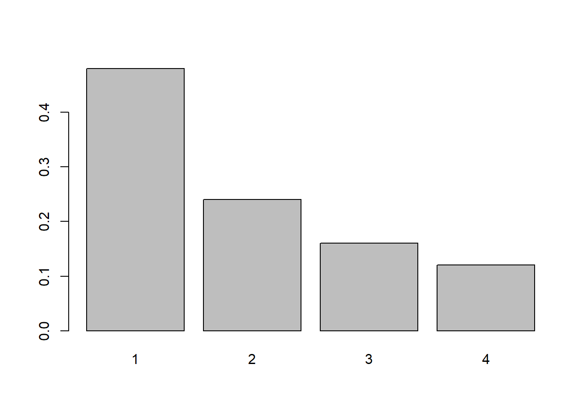
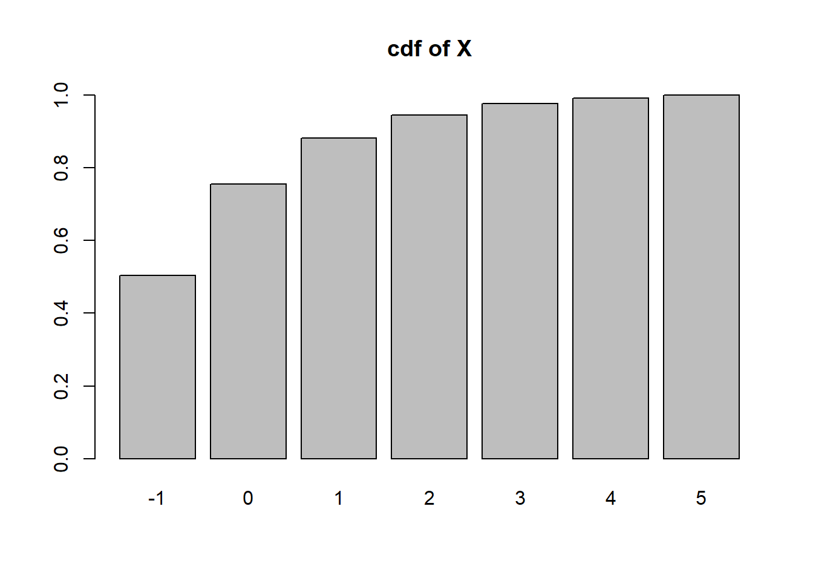

x <- 0:1
px <- c(.25, .75)
y<- 0:1
py <- c(.75, .25)
pmf <- px %*% t(py)
rownames(pmf) <- x
colnames(pmf) <- y
addmargins(pmf) 0 1 Sum
0 0.1875 0.0625 0.25
1 0.5625 0.1875 0.75
Sum 0.7500 0.2500 1.00(From Introduction to Probability and Statistics for Data Science) The repair of a broken cell phone is either completed on time or it is late and the repair is either done satisfactoily or unsatisfactorily. What is the sample space for a cell phone repair?
What is the probability that at least one of the following events occurs on a single throw of two fair six-sided dice?
The dice total 5.
The dice total 6.
The dice total 7.
What is the probability that at least one of the following events occurs on a single throw of two fair four-sided dice?
The dice total 5.
The dice total 6.
The dice total 7.
Alex and Bob each flips a fair coin twice. Use “1” to denote heads and “0” to denote tails. Let X be the maximum of the two numbers Alex gets, and let Y be the minimum of the two numbers Bob gets.
Find and sketch the joint PMF \(p_{X,Y} (x, y)\).
Find the marginal PMF \(p_X(x)\) and \(p_Y (y)\).
Find the conditional PMF \(P_{X|Y} (x | y)\). Does \(P_{X|Y} (x | y) = P_X(x)\)? Why or why not?
x <- 0:1
px <- c(.25, .75)
y<- 0:1
py <- c(.75, .25)
pmf <- px %*% t(py)
rownames(pmf) <- x
colnames(pmf) <- y
addmargins(pmf) 0 1 Sum
0 0.1875 0.0625 0.25
1 0.5625 0.1875 0.75
Sum 0.7500 0.2500 1.00prop.table(pmf, 2) 0 1
0 0.25 0.25
1 0.75 0.75Each column gives P(X=x|Y=y) for the two values of y; you can see that they are the same; the reason is because the value of X and Y are independent.
Two fair dice are rolled. Find the joint PMF of \(X\) and \(Y\) when
die1 <- rep(1:6, 6)
die2 <- rep(1:6, rep(6,6))
outcomes <- data.frame(die1, die2)
outcomes$x <- pmax(die1, die2)
outcomes$y <- die1+die2
pmf <- prop.table(table(outcomes$x, outcomes$y))
pmf
2 3 4 5 6 7
1 0.02777778 0.00000000 0.00000000 0.00000000 0.00000000 0.00000000
2 0.00000000 0.05555556 0.02777778 0.00000000 0.00000000 0.00000000
3 0.00000000 0.00000000 0.05555556 0.05555556 0.02777778 0.00000000
4 0.00000000 0.00000000 0.00000000 0.05555556 0.05555556 0.05555556
5 0.00000000 0.00000000 0.00000000 0.00000000 0.05555556 0.05555556
6 0.00000000 0.00000000 0.00000000 0.00000000 0.00000000 0.05555556
8 9 10 11 12
1 0.00000000 0.00000000 0.00000000 0.00000000 0.00000000
2 0.00000000 0.00000000 0.00000000 0.00000000 0.00000000
3 0.00000000 0.00000000 0.00000000 0.00000000 0.00000000
4 0.02777778 0.00000000 0.00000000 0.00000000 0.00000000
5 0.05555556 0.05555556 0.02777778 0.00000000 0.00000000
6 0.05555556 0.05555556 0.05555556 0.05555556 0.02777778die1 <- rep(1:6, 6)
die2 <- rep(1:6, rep(6,6))
outcomes <- data.frame(die1, die2)
outcomes$x <- pmin(die1, die2)
outcomes$y <- pmax(die1,die2)
pmf <- prop.table(table(outcomes$x, outcomes$y))
pmf
1 2 3 4 5 6
1 0.02777778 0.05555556 0.05555556 0.05555556 0.05555556 0.05555556
2 0.00000000 0.02777778 0.05555556 0.05555556 0.05555556 0.05555556
3 0.00000000 0.00000000 0.02777778 0.05555556 0.05555556 0.05555556
4 0.00000000 0.00000000 0.00000000 0.02777778 0.05555556 0.05555556
5 0.00000000 0.00000000 0.00000000 0.00000000 0.02777778 0.05555556
6 0.00000000 0.00000000 0.00000000 0.00000000 0.00000000 0.02777778Let \(Y = X+N\), where \(X\) is the input, \(N\) is the noise, and \(Y\) is the output of a system. Assume that \(X\) and \(N\) are independent random variables. It is given that \(E[X] = 0\), \(Var[X] = \sigma^2_X\), \(E[N] = 0\), and \(Var[N] = \sigma^2_N\).
\(\rho(X,Y)= \dfrac{Cov(X,Y)}{SD(X)SD(Y)}=\dfrac{E(XY)-E(X)E(Y)}{\sigma_X \cdot \sqrt{\sigma^2_X+\sigma^2_N}}\)
\(E(XY)=E(X^2+XN)=E(X^2)+E(X)E(N)\). Because \(E(X)=E(N)=0\) this simplifies to
\(\rho(X,y)=\dfrac{E(X^2)}{\sigma_x\sqrt{\sigma^2_X+\sigma^2_N}}\)
\(Var(X)=E(X^2)-E(X)^2 = E(X^2)\) so we can replace the numerator with \(\sigma^2_X\). So
\(\rho(X,Y) = \sqrt{\dfrac{\sigma^2_X}{\sigma^2_X+\sigma^2_N}}\)
#example: sigma_X = 5, sigma_N=2
X <- rnorm(10000, 0, 5)
N <- rnorm(10000, 0, 2)
cor(X, X+N)[1] 0.9309812sqrt(5^2/(5^2+2^2))[1] 0.9284767\(E[(X-aY)^2]=E[X^2-2aXY+a^2Y^2]=E[X^2]-2aE[XY]+a^2E[Y^2]\)
Because \(E(Y)=0\), \(E[Y^2]=Var(Y)=\sigma_X^2+\sigma_N^2\). We already have that \(E(X^2)=\sigma_X^2\) and \(E(XY)=\sigma_X^2\). Thus
$E[(X-aY)^2]=(_X^2+_N2)a2- 2_X^2a+_X^2 $
This is a quadratic function in \(a\), and the vertex can be found at \(-\frac{B}{2A}\) or in this case \(a^*=\dfrac{\sigma_X^2}{\sigma_X^2+\sigma_N^2}\)
Plugging this in for \(a\) we get
\(E[(X-aY)^2]=(\sigma_X^2+\sigma_N^2)\dfrac{\sigma_X^4}{(\sigma_X^2+\sigma_N^2)^2}-2\dfrac{\sigma_X^4}{\sigma_X^2+\sigma_N^2}+\sigma_X^2=\sigma_X^2\left(1-\dfrac{\sigma_X^2}{\sigma_X^2+\sigma_N^2}\right)\)
\(=\sigma_X^2\left(\dfrac{\sigma_N^2}{\sigma_X^2+\sigma_N^2}\right)=\dfrac{\sigma_X^2}{\eta+1}\)
The gene that controls white coat color in cats, KIT , is known to be responsible for multiple phenotypes such as deafness and blue eye color. A dominant allele W at one location in the gene has complete penetrance for white coat color; all cats with the W allele have white coats. There is incomplete penetrance for blue eyes and deafness; not all white cats will have blue eyes and not all white cats will be deaf. However, deafness and blue eye color are strongly linked, such that white cats with blue eyes are much more likely to be deaf. The variation in penetrance for eye color and deafness may be due to other genes as well as environmental factors.
Suppose that 30% of white cats have one blue eye, while 10% of white cats have two blue eyes.
About 73% of white cats with two blue eyes are deaf
40% of white cats with one blue eye are deaf.
Only 19% of white cats with other eye colors are deaf.
n.blue <- c(0,1,2)
p.n.blue <- c(.60, .30, .10)
p.deaf.given.b <- c(.19, .40, .73) #for 0, 1 ,2 blue eyes
#P(Deafness) = P(0b)*P(deaf|0b) + P(1b)*P(deaf|1b) + P(2b)*P(deaf|2b)
(p.deaf <- sum(p.n.blue * p.deaf.given.b))[1] 0.307#Check
nCats <- 10000
nblue <- sample(n.blue, size=nCats, replace=TRUE, prob=p.n.blue)
isdeaf <- FALSE
for(i in 1:nCats){
isdeaf[i] <- runif(1) < p.deaf.given.b[nblue[i]+1]
}
mean(isdeaf)[1] 0.308#P(2b | deaf) = P(2b)*P(deaf|2b) / p(deaf)
p.n.blue[3] * p.deaf.given.b[3] / p.deaf[1] 0.237785#check
mean(nblue[isdeaf]==2)[1] 0.2441558Suppose that deaf, white cats have an increased chance of being blind, but that the prevalence of blindness differs according to eye color. While deaf, white cats with two blue eyes or two non-blue eyes have probability 0.20 of developing blindness, deaf and white cats with one blue eye have probability 0.40 of developing blindness. White cats that are not deaf have probability 0.10 of developing blindness, regardless of their eye color.
What is the prevalence of blindness among deaf, white cats?
p.blind.given.nodeaf <- 0.10
p.blind.given.deaf.and.nblue <- c(0.20, 0.4, 0.2) #for 0, 1, 2 blue eyes
#P(blind & deaf) = P(0b)*P(deaf|0b)*P(blind|deaf&0b)+
# P(1b)*P(deaf|1b)*P(blind|deaf&1b)+
# P(2b)*P(deaf|2b)*P(blind|deaf&2b)+
p.blind.and.deaf <- sum(p.n.blue * p.deaf.given.b * p.blind.given.deaf.and.nblue)
#P(blind | deaf ) = P(blind & deaf) / P(deaf)
(p.blind.given.deaf = p.blind.and.deaf / p.deaf)[1] 0.2781759#check
isBlind <- FALSE
for(i in 1:nCats){
if(!isdeaf[i]){
isBlind[i] <- runif(1) < p.blind.given.nodeaf
} else {
isBlind[i] <- runif(1) < p.blind.given.deaf.and.nblue[nblue[i]+1]
}
}
#check
mean(isBlind[isdeaf])[1] 0.2727273#P(blind) = P(deaf & blind) + P(nondeaf & blind)
#P(nondeaf & blind ) = P(nondeaf) * P(blind | nondeaf)
p.blind.and.nondeaf <- (1-p.deaf)*p.blind.given.nodeaf
(p.blind <- p.blind.and.deaf + p.blind.and.nondeaf)[1] 0.1547#check
mean(isBlind)[1] 0.1542#P(2b | blind) = P(2b & blind) / p(blind)
#numerator: P(2b & blind) = P(2b) * [P(deaf|2b) * p(blind|deaf & 2b) + P(nondeaf|2b) * p(blind|nondeaf & 2b)]
p.blind.and.2b <- p.n.blue[3] * (p.deaf.given.b[3]*p.blind.given.deaf.and.nblue[3] +
(1-p.deaf.given.b[3]) * p.blind.given.nodeaf)
(p.2b.given.blind = p.blind.and.2b / p.blind)[1] 0.1118293#check
mean(nblue[isBlind]==2)[1] 0.1219196Linda is 31 years old, single, outspoken, and very bright. She majored in philosophy. As a student, she was deeply concerned with issues of discrimination and social justice, and also participated in anti-nuclear demonstrations. Which is more probable?
Linda is a banker.
Linda is a banker and considers herself a liberal Democrat.
To answer this question we will use data from the GSS survey found at https://github.com/AllenDowney/ThinkBayes2/raw/master/data/gss_bayes.csv.
The code for “Banking and related activities” in the indus10 variable is 6870. The values of the column sex are encoded like this:
1: Male, 2: Female
The values of polviews are on a seven-point scale:
1 Extremely liberal
2 Liberal
3 Slightly liberal
4 Moderate
5 Slightly conservative
6 Conservative
7 Extremely conservativeDefine “liberal” as anyone whose political views are 3 or below. The values of partyid are encoded:
0 Strong democrat
1 Not strong democrat
2 Independent, near democrat
3 Independent
4 Independent, near republican
5 Not strong republican
6 Strong republican
7 Other partyYou need to compute:
gss <- read.csv("https://github.com/AllenDowney/ThinkBayes2/raw/master/data/gss_bayes.csv")
#banker : indus10==6870
#female : sex == 2
#liberal: polviews <= 3
#democrat: partyid <= 2
#In my reading, I am interpreteing that 'Linda is female' is given from the context;
#P(banker | female)
mean(gss[gss$sex==2,]$indus10==6870)[1] 0.02116103#P(liberal banker | female)
mean(gss[gss$sex==2 & gss$polviews <=3,]$indus10==6870)[1] 0.01723195#P(liberal Dem banker | female)
mean(gss[gss$sex==2 & gss$polviews <=3 & gss$partyid <= 1,]$indus10==6870)[1] 0.01507289Compute the following probabilities:
mean(gss[gss$partyid<=1,]$polviews<=3)[1] 0.389132mean(gss[gss$polviews<=3,]$partyid<=1)[1] 0.5206403There’s a famous quote about young people, old people, liberals, and conservatives that goes something like:
If you are not a liberal at 25, you have no heart. If you are not a conservative at 35, you have no brain.
Whether you agree with this proposition or not, it suggests some probabilities we can compute as an exercise. Rather than use the specific ages 25 and 35, let’s define young and old as under 30 or over 65. For these thresholds, I chose round numbers near the 20th and 80th percentiles. Depending on your age, you may or may not agree with these definitions of “young” and “old”.
I’ll define conservative as someone whose political views are “Conservative”, “Slightly Conservative”, or “Extremely Conservative”.
Compute the following probabilities. For each statement, think about whether it is expressing a conjunction, a conditional probability, or both. For the conditional probabilities, be careful about the order of the arguments. If your answer to the last question is greater than 30%, you have it backwards!
mean(gss$age <30 & gss$polviews <=3)[1] 0.06579428mean(gss[gss$age <30,]$polviews <=3)[1] 0.3385177mean(gss$age >65 & gss$polviews >= 5)[1] 0.06226415mean(gss[gss$polviews >=5,]$age >65)[1] 0.1820933Suppose you meet someone and learn that they have two children. You ask if either child is a girl and they say yes. What is the probability that both children are girls? (Hint: Start with four equally likely hypotheses.)
Before we know anything about their two kids, the number of girls \(X\) they have could be 0, 1 or 2. Simplifying the scenario with the ‘equally likely hypothesis’ means that we assume each kid has a 50% chance of being a girl, independently. Thus the probabilities are 0.25, 0.5 and 0.25 respectively.
If we learn that at least one of the kids is a girl, that tells us that the first possibility, that \(x=0\) is not possible. Thus \(P(X=2 | X>0) = .\dfrac{25}{.5+.25}= \frac{1}{3}\)
There are many variations of the Monty Hall problem. For example, suppose Monty always chooses Door 2 if he can, and only chooses Door 3 if he has to (because the car is behind Door 2).
#3 equally likely possibilities:
#C1 -> Monty chooses Door 2
#C2 -> Monty cannot choose Door 2, chooses Door 3
#C3 -> Monty chooses Door 2
#So if Monty chooses Door 2, either C1 or C3 must be the case, each equally likely.
#Thus P(C3 | Monty chooses 2) = .50#If he chose Door 3, that means that it must be the case that the car is behind
#door 2; he would *ONLY* choose door 3 in that case.
#Thus P(C2 | Monty chooses 3) = 1.0M&M’s are small candy-coated chocolates that come in a variety of colors. Mars, Inc., which makes M&M’s, changes the mixture of colors from time to time. In 1995, they introduced blue M&M’s.
In 1994, the color mix in a bag of plain M&M’s was 30% Brown, 20% Yellow, 20% Red, 10% Green, 10% Orange, 10% Tan.
In 1996, it was 24% Blue , 20% Green, 16% Orange, 14% Yellow, 13% Red, 13% Brown.
Suppose a friend of mine has two bags of M&M’s, and he tells me that one is from 1994 and one from 1996. He won’t tell me which is which, but he gives me one M&M from each bag. One is yellow and one is green. What is the probability that the yellow one came from the 1994 bag?
(Hint: The trick to this question is to define the hypotheses and the data carefully.)
\(P(G|94) = .10, P(G|96) = .20\) \(P(Y|94) = .20, P(Y|96) = .14\) \(P(94)=P(96)=.50\) assuming equally likely. It’s important to realize only one of two situations could have occurred:
The corresponding probabilities are \((.10)(.14)=.014\) and \((.20)(.20)=.04)\). The question could be stated: What is the probability that Sit.1 occurred given that either Sit1 or Sit2 occured.
The likelihood is \(.014 / (.014+.04) = .2592593\)
Suppose you have two coins in a box. One is a normal coin with heads on one side and tails on the other, and one is a trick coin with heads on both sides. You choose a coin at random and see that one of the sides is heads. What is the probability that you chose the trick coin?
This is actually similar to the “family with two girls” problem. The equally likely coins are “HT” and “HH”.
\(P(Heads | HH) = 1\) \(P(Heads | TH) = .5\)
Bayes Theorem tells us that \(P(HH | Heads) = \dfrac{P(HH)*P(Heads|HH)}{P(HH)P(Heads|HH)+P(TH)P(Heads|TH)}=\dfrac{.5}{.5+.25}=\frac23\)
Seems counter intuitive! If I pick a random coin from the two, you already know that one of the sides is a head without looking at it. Somehow then, when you look at just one side of the coin, seeing a H makes you 67% sure that it is the trick coin. The reason is that seeing the head side is like flipping it once and getting a H. That is less likely to occur with the fair coin, hence this outcome lends evidence to the “trick coin” hypothesis.
(From Introduction to Probability and Statistics for Data Science) Customers can buy one of four produts, each having its own web page with a ``buy’’ link. When they click on the link, they are redirected to a common page containing a registration and payment orm. Once there the customer eithe rbuys the desired product (labeled 1,2,3 or 4) or they fail to complete and a sale is lost. Let event \(A_i\) be that a customer is on produt \(i\)’s web page and let event \(B\) be the event that the customer buys the product. For the purposes of this problem, assume that each potential customer visits at most one product page and so he or she buys at most one produt. For the probabilities shown in the table below, find the probability that a customer buys a product.
| Product \((i)\) | \(Pr[B|A_i]\) | $Pr[A_i] |
|---|---|---|
| 1 | \(0.72\) | \(0.14\) |
| 2 | \(0.90\) | \(0.04\) |
| 3 | \(0.51\) | \(0.11\) |
| 4 | \(0.97\) | \(0.02\) |
Continuing from the previous problem, if a random purchase is selected, find the probability that it was item 1 that was purchased. Do the same for items 2, 3 and 4.
Consider a new type of commercial unmanned aerial vehicle (UAV) that has been outfitted with a transponder so that if it crashes it can easily be found and reused. Other older UAVs do not have transponders. Eighty percent of al lUAVs are recovered and, of those recovered, 75% have a transponder. Further, of those not recovered, 90% do not have a transponder. Denote recovery as \(R+\) and failure to recover as \(R-\). Denote having a transponder as \(T+\) and not having a transponder as \(T-\). Find
Suppose that the test for a disease has sensitivity 0.90 and specificity 0.999. The base rate for the disease is 0.002. Find
The probability that someone selected at random from the population tests positive.
The probability that the person has the diseases given a positive test result (the positive predictive value).
The probability that the person does not have the disease given a negative test result (the negative predictive value).
(From Introduction to Probability and Statistics for Data Science) Let \(X\) have pmf \[p(x)=\begin{cases}0.2,&x=1\\0.3,&x=2\\0.5,&x=4\\0,&\text{otherwise}\end{cases}\] Show that this is a valid pmf.
Let \(X\) denote the sum of two fair, six-sided dice. Specify the domain that \(X\) can take on and then write out the equation for the PMF and show that it is valid.
Consider an information source that produces numbers \(k\) in the set \(S_X=\{1,2,3,4\}\). Find and plot the pmf in the following cases:
Use the fact that \(p_1+p_2+p_3+p_4=1\). In other words, \(p_1/1+p_1/2+p_1/3+p_1/4=p_1(12/12+6/12+4/12+3/12) = p_1(25/12) =1\), so \(p_1=12/25\). Then \(p_2=6/25\), \(p_3=4/25\) and \(p_4=3/25\).
barplot(height=c(12/25, 6/25, 4/25, 3/25), names=1:4)
Starting with \(k=1\) we have \(p_2 = p_1/2\). Following this pattern, \(p_3=p_1/4\) and \(p_4=p_1/8\). If we add these together we have \(p_1(8/8 + 4/8 + 2/8 + 1/8) = 15/8\). Thus we have \(p_1=8/15, p_2=4/15, p_3=2/15\) and \(p_4=1/15\)
barplot(height=c(8/15, 4/15, 2/15, 1/15), names=1:4)
Starting with \(k=1\) we have \(p_2 = p_1/2\), \(p_3=p_2/2^2= p_2/4 = (p_1/2)/4 = p_1/8\). \(p_4 = p_3/2^3 = p_3/8 = (p_1/8)/8) = p_1/64\). The sum is \(p_1(64/64 + 32/64 + 8/64 + 1/64) = p_1(105/64)\) so \(p_1 = 64/105, p_2=32/105, p_3=8/105, p_4=1/105\)
barplot(height=c(64/105, 32/105, 8/105, 1/105), names=1:4)
Consider the pmf for part a. The sum of the probabilities would be \(\sum_{k=1}^\infty p_1/k\). However \(\sum_{k=1}^\infty \frac{1}{k}\) does not converge, so no matter what \(p_1\) is, the sum of probabilities will exceed 1.
For part b, the sum of the probabilities is \(\sum_{k=1}^\infty 2p_1/{2^{k}}\). Because \(\sum_{k=1}^\infty \frac{1}{2^k}=1\), then it would be possible to define a random variable with support \(1,2,\ldots\) with this pmf.
For part c, because \(p_k/2^k \leq p_k/2\), we at least know that \(\sum_k p_k\) is finite, so such a random variable with infinite support is certainly feasible. The exact value of \(p_1\) is not as simple to calculate, but we were not asked to do that.
Two dice are tossed. Let \(X\) be the absolute difference in the number of dots facing up.
#It may be simplest to calculate all possible values of X.
x <- vector("numeric")
for(i in 1:6){
for(j in 1:6){
x[length(x)+1] = abs(i-j)
}
}
#now that we have all equally likely values, we can just calculate the pmf in a prop.table
pX <- prop.table(table(x))
#And create a barplot.
barplot(pX)
#The probability that X <= 2 is easy to find using the pmf
#The columns are named with strings, so we can convert 0 1 and 2 to strings to pull out the proper probabilities.
sum(pX[as.character(0:2)])[1] 0.6666667#The expected value and variance can be calculated from the pmf.
(EX <- sum(0:5 * pX))[1] 1.944444(VarX <- sum((0:5 - EX)^2 * pX))[1] 2.052469#or by taking the mean and population variance of the x values themselves
mean(x)[1] 1.944444mean((x-mean(x))^2)[1] 2.052469A modem transmits a +2 voltage signal into a channel. The channel adds to this signal a noise term that is drawn from the set \(\{0,-1,-2,-3\}\) with respective probabilities \(\{4/10, 3/10, 2/10, 1/10\}\).
#Let X be the noise
k <- seq(0,-3)
pk <- c(4/10, 3/10, 2/10, 1/10)
y <- sort(2+k)
py <- pk[order(2+k)]
barplot(height=py, names=y, main="pmf of Y")
This happens when there’s no noise, with probability 4/10.
#Interpreting 'positive' to be strictly positive, not zero:
sum(py[y>0])[1] 0.7(EY <- sum(y*py))[1] 1(VarY <- sum((y-EY)^2*py))[1] 1On a given day, your golf score takes values from the numbers 1 through 10 with equal probability of getting each one. Assume that you play golf for three days, and assume that your three performances are independent. Let \(X_1, X_2\) and \(X_3\) be the scores that you get, and let \(X\) be the minimum of these three scores.
\(P(X > k-1) = P(X \geq k) =P(X = k)+P(X > k)\), thus \(P(X=k)=P(X>k-1)-P(X>k)\).
\(P(X_1>k)=\frac{10-k}{10}\)
\(P(X > k) = P(X_1,X_2,X_3 > k) = P(X_1 > k)P(X_2>k)P(X_3>k)\)
This means \(P(X>k) =\frac{(10-k)^3}{10^3}\), and \(P(X>k-1)=\frac{(11-k)^3}{10^3}\). From the previous result, \(P(X=k)=P(X>k-1)-P(X>k)=\frac{(11-k)^3-(10-k)^3}{10^3}\)
This is asking to take the difference of the two expected values. It’s obvious that \(E(X_1)=5.5\); We need to find the expected value of \(X\).
x <- 1:10
px <- ((11-x)^3-(10-x)^3)/10^3
#double check
sum(px)[1] 1(EX <- sum(x*px))[1] 3.0255.5-EX[1] 2.475The average (expected) point improvement when going from a 1 day point to a minimum of 3 days is 2.475.
Let \(g(X) = \begin{cases}1 & \text{if }X>10\\0 & \text{otherwise}\end{cases}\) and \(h(X) = \begin{cases}X-10 & \text{if }X-10>0\\0 & \text{otherwise}\end{cases}\)
k <- 1:15
p1 <- 1/(sum(1/k))
pk <- p1/k
g <- function(x){
return(as.numeric(x>10))
}
sum(g(k)*pk)[1] 0.1173098h <- function(x){
return(max(0, x-10))
}
p1 <- 1/(sum(1/2^(k-1)))
pk <- p1*(1/2^(k-1))
sum(h(k)*pk)[1] 5A voltage \(X\) is uniformly distributed on the set \(\{-3,\ldots,3,4\}\).
x <- -3:4
px <- 1/length(x)
(EX <- sum(x*px))[1] 0.5(VarX <- sum((x-EX)^2*px))[1] 5.25y <- -2*x^2+3
(EY <- sum(y*px))[1] -8(VarY <- sum((y-EY)^2*px))[1] 105w <- cos(pi*x/8)
(EW <- sum(w*px))[1] 0.6284174(VarW <- sum((w-EW)^2*px))[1] 0.1050915z <- w^2
(EZ <- sum(z*px))[1] 0.5(VarZ <- sum((z-EZ)^2*px))[1] 0.125Consider a cdf
\(F_X(x)-\begin{cases}0,&\text{if }x < -1\\ 0.5 & \text{if }-1 \leq x < 0\\(1+x)/2 & \text{if }0 \leq x < 1\\1&\text{otherwise}\end{cases}\)
Find \(\mathbb{P}(X < -1)\), \(\mathbb{P}(-0.5 < X < 0.5)\), and \(\mathbb{P}(X>0.5)\).
#P(X < -1) = 0 because F(x) only goes up to .5 at x=-1, not when x < -1
#P(-.5 < X < .5) = F(.5) - F(-.5)
(1+.5)/2 - .5[1] 0.25#P(X > 0.5) = 1-P(X<.5) = 1-F(.5)
1- (1+.5)/2[1] 0.25Let \(X\) have PDF \[f(x) = \begin{cases} 1-x/2,&0\leq x \leq 2\\0,&\text{otherwise}\end{cases}\]
Sketch the PDF and show geometrically that this is a valid PDF.
Find \(Pr[X>0]\) and \(Pr[X\geq 0]\)
Find \(Pr[X>1]\) and \(Pr[X\geq 1]\)
Use calculus or software to calculate the CDF from the PDF. Write the expression for \(F(x)\) and plot the PDF and CDF.
Use calculus or software to calculate the expected value of \(X\).
Suppose that \(X\) and \(Y\) are random variables with \(\mathbb{E}(X)=12\) and $(Y)=8.
These problems are excellent practice but they are beyond the material we cover in STAT 340.
Let \(X\) be a random variable with pmf \(p_k = c/2^k\) for \(k=1,2,\ldots\).
This was done above; because \(\sum_{i=1}^\infty 1/2^k = 1\), the value of \(c\) must be \(1\).
\(P(X>4) = 1-P(X \leq 3)=1-(\frac12 + \frac14 + \frac18)\)
1-(1/2+1/4+1/8)[1] 0.125The expected value can be calculated by taking the sum \(\sum k p_k = \sum_{k=1}^\infty \frac{k}{2^k}\) which we can show using facts from calculus equals 2. Why? Well, as long as \(|p|<1, \sum_{k=1}^{\infty}p^k=\frac{p}{1-p}\) (this is a geometric series). If we take a derivative of both sides we get \(\sum_{k=1}^\infty kp^{k-1}=\frac{1}{(1-p)^2}\). Multiply both sides by \(p\) to get \(\sum_{k=1}^\infty kp^{k}=\frac{p}{(1-p)^2}\). In our case, \(p=\frac12\). Plugging this in we get \(\frac{.5}{.5^2}=2\).
Let \(X\) be a random variable with pmf \(p_k = c/2^k\) for \(k=-1,0,1,2,3,4,5\).
The sum of the probabilities are \(c(2 + 1 + \frac{1}{2}+\frac{1}{4}+\frac{1}8+\frac{1}{16}+\frac{1}{32})=c\frac{127}{32}\) so \(c=\frac{32}{127}\).
c=32/127
k = seq(-1,5)
pk=c/2^k
names(pk) <- k
sum(pk[as.character(2)])[1] 0.06299213sum(pk[as.character(2:5)])[1] 0.1181102If \(X^3 < 5\) that means \(X^3 \leq 4\) and thus \(X \leq 4^{1/3}\approx 1.587\)
sum(pk[k<=4^(1/3)])[1] 0.8818898sum(pk[k^3<5])[1] 0.8818898barplot(height=pk, names=k, main='pmf of X')
barplot(height=cumsum(pk), names=k, main='cdf of X')
For a continuous random variable \(X\) and constant \(c\), prove that \(\mathbb{E}(cX)=c\mathbb{E}(X)\)
For a continuous random variable \(X\) and constants \(a,b\), prove that \(\mathbb{E}(aX+b)=a\mathbb{E}(X)+b\)
Let \(X\) be a random variable with pmf \(p_k = 1/2^k\) for \(k=1,2,\ldots\).
The variance is \(E(X^2)-(EX)^2=E(X^2)-4\). The expected value of \(X^2\) can be derived, though it’s not so fun…
Start by taking the equation \(\sum_k kp^k = \frac{p}{(1-p)^2}\) and take a derivative again. We get \(\sum_k k^2 p^{k-1} = \frac{(1-p)^2+2p(1-p)}{(1-p)^4}\). Multiply through by \(p\) to get \(\sum_k k^2 p^k = \frac{p(1-p)^2+2p^2(1-p)}{(1-p)^4}\). If we let \(p=\frac12\) we have found \(E(X^2)=\sum_{k=1}^\infty k^2(\frac12)^k=\dfrac{\frac18-\frac{2}{8}}{\frac{1}{16}}=6\). Thus \(Var(X)=E(X^2)-E(X)^2 = 6-4=2\). It should be noted that this random variable is actually a geometric random variable (well, according to the “number of trials until and including the first success definition). If we define \(Y\sim Geom(.5)\) using our definition of “number of failures before the first success” then We can let \(X=Y+1\). \(E(X)=E(Y+1)=\frac{1-.5}{.5}+1=2\) and \(Var(X)=Var(Y)=\frac{1-p}{p2}=\frac{.5}{.25^2}=2\).
Show that \(\mathbb{E}(X-\mu)^2 = \mathbb{E}X^2-\mu^2\). Hint: expand the quantity \((X-\mu)^2\) and distribute the expectation over the resulting terms.
The proof goes like this: We first FOIL \((X-\mu)^2\):
\(\mathbb{E}(X-\mu)^2 = \mathbb{E}(X^2 - 2\mu X + \mu^2)\)
We next split the expected value into 3 expected values using the fact that \(\mathbb{E}\) is a linear operator.
\(\mathbb{E}(X-\mu)^2 = \mathbb{E}X^2 -2\mu \mathbb{E}X + \mathbb{E}\mu^2\)
We next observe that \(\mu^2\) is constant and \(\mathbb{X}=\mu\)
\(\mathbb{E}(X-\mu)^2 = \mathbb{E}X^2 -2\mu \mu + \mu^2\)
We can simplify the expression and we’re done!